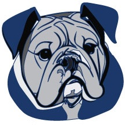
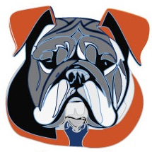
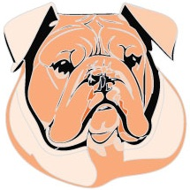
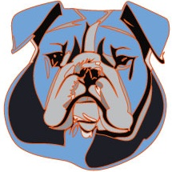

Painting/ Printmaking

At Yale we aim to situate painting and printmaking within a broader and global history of aesthetics. Our point of departure is the idea that a medium is a discursive system. The goal is to encourage artists to question, explore and exploit conventions that define any one medium and the interrelationships amongst mediums.
As a community we explore themes such as power and politics in art as well as fundamentals of aesthetics, colorspace, and materials such as fabrics, inks paper and matrices. Our printshop facility is a full fine arts printing facility with lithography, intaglio, relief, screen-printing, risograph and the capacity for book arts and mono-printing. It is a space that fosters creative collaboration.
Graphic Design

The Yale School of Art Program in Graphic Design is grounded in visual exploration and academic study, bringing together an imaginative and ambitious group of students and faculty from around the world to explore design as a visual language and methodology for investigating culture, technology and the issues of our time.
As a leading graduate art school and research university, we work amongst highly motivated colleagues and practitioners and have access to advanced tools and resources. We broaden our form-making, deepen our thinking and take risks. We make new creative partnerships across diverse regions and disciplines and cultivate our individual visual voices.
Photography

The fundamental mission of the Photography Program at Yale is that each scholar will be supported and challenged to develop and build on their unique view of the world through the discipline of lens-based picture making. Our scholars and alumni have a significant impact on shaping the medium as a whole as it exists in the world.
The presence of photography in our culture, in terms of screens, devices and media, challenges but also enriches the medium of photography as a fine art. Yale Photography continues to interrogate its work and widen its scope as it looks to the future, to be wholly inclusive of under-represented identities, cultures and voices among its community of scholars and practitioners.
Sculpture

The Department of Sculpture in the Yake School of Art recognizes that the contemporary practice of sculpture is difficult to define by medium, process or conceptual underpinnings. We attempt to eschew style and resist rigid definitions, because tomorrow’s makers cannot be described by yesterday’s definitions of art.
As faculty and students, we are interested in a panoply of modes of production and a multitude of histories. To support this work, we have large, private studios, a wood shop, metal shop, laser cutter, digital fabrication labs, as well as access to a printshop and photo labs. Of particular interest is work that is personally-driven and challenges norms of conventional professional practice.
Gallery
Our creative process is inquiry, expression and engagement with ideas, the self and the world. Our creative community consists of resilient, resourceful, dexterous, ambitious and joyful thinkers and makers. We believe that rigorous study and critique ignites and cultivates the creative process.
In our galleries, you can see how each artist’s work forms a diverse yet coherent body, demonstrating that individual artist’s working methodology and superobjective. Our exhibitions, online and in the art school galleries, are presented by a leading body of designers, artists and thinkers.
Publications
Our stive for inclusivity compels us to question professional norms and practices, rethink the prevailing paradigms of art and design education, pursue critical discourse, and elevate diverse visual traditions, values and alternative forms of cultural production.
Publications of the Yale School of Art deepen and broaden the field through pursuit of the critical practice of art and design. This includes the tools, technologies, histories and futures. In reading and writing works of critique, we attempt to tease out the material, historical, formal and societal undercurrents that make up the work in front of us.